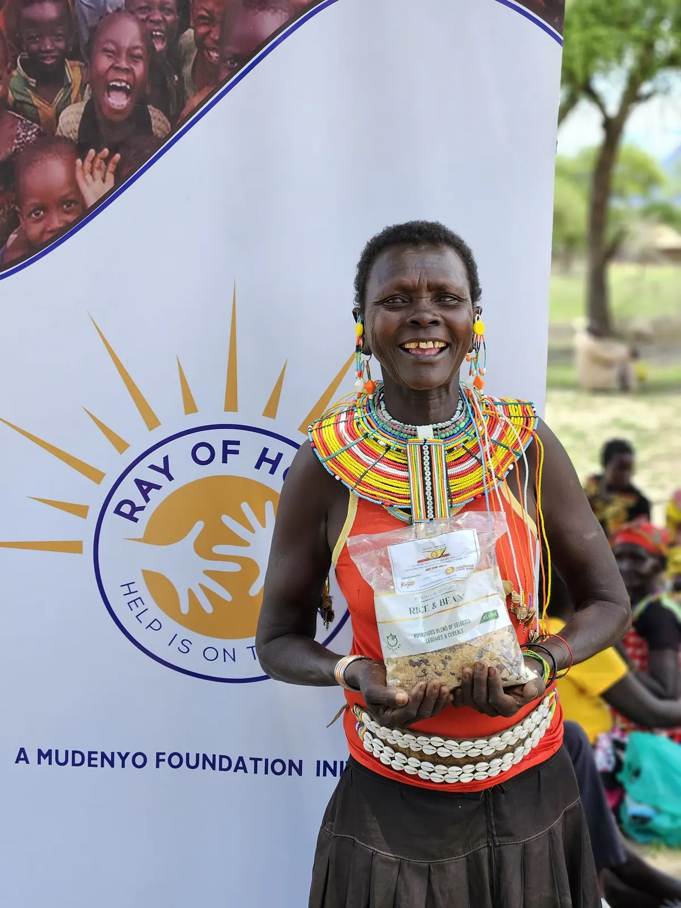

Rapid response
Emergency Food Response
When floods, drought or conflict displace families, we activate our Emergency Response Protocol and mobilise food distribution within 48 hours of a crisis alert.
We partner with county governments, the Kenya Red Cross and WFP Kenya to reach communities that cannot wait. Emergency ration packs of maize flour, legumes, cooking oil and salt are designed to sustain a family of five for 14 days. In 2024 we responded to three emergency events in Turkana, Baringo and West Pokot counties.
3Emergencies responded to
2,800Families reached
48 hrsAverage response time